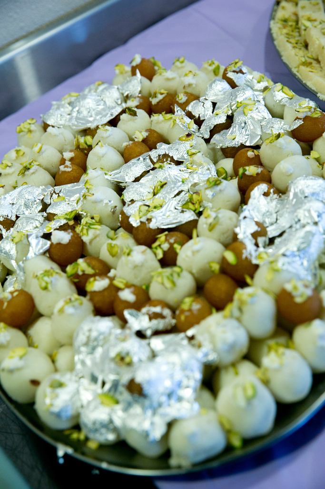
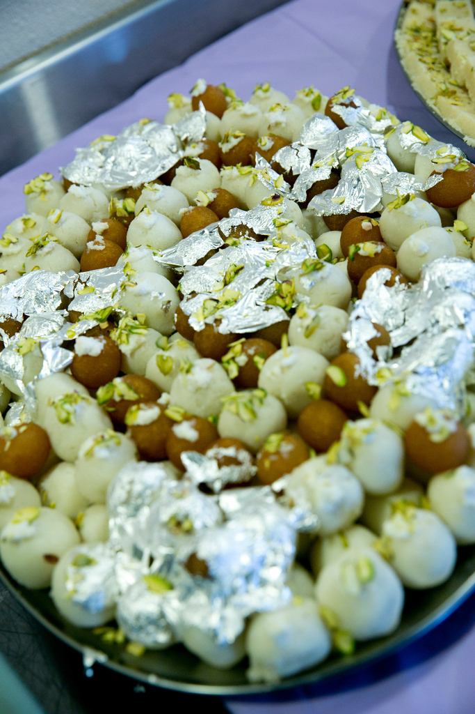
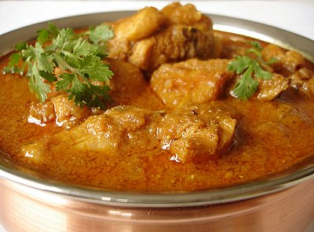
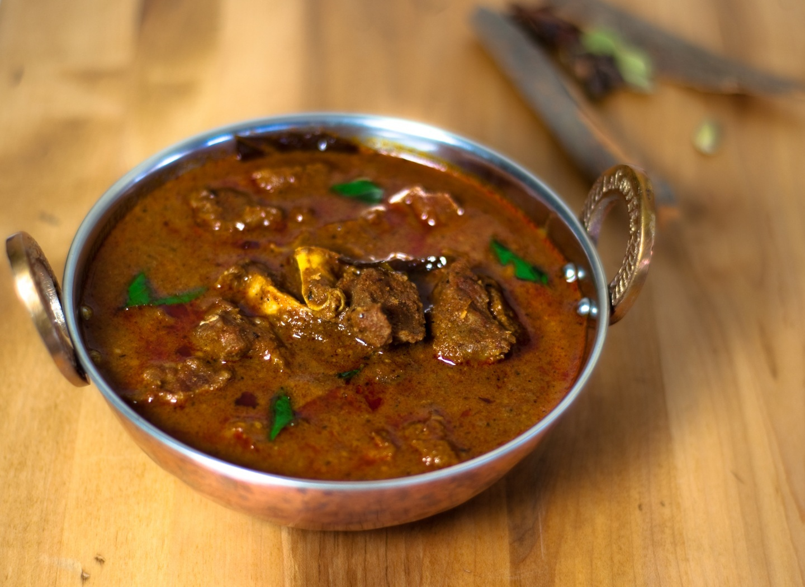
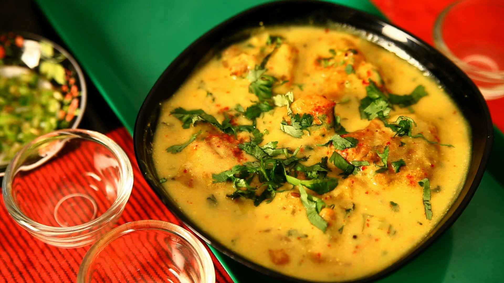
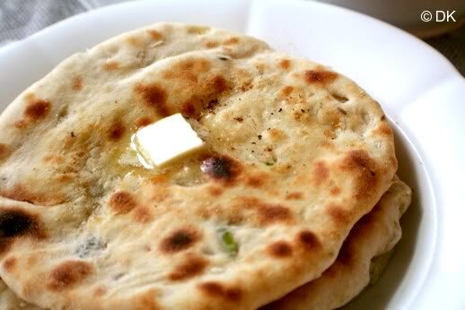
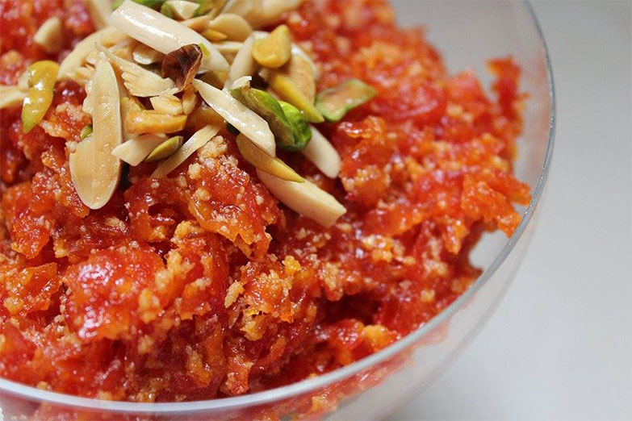

Business Hours
Monday
CLOSED
Tuesday - Saturday
9:30am - 9:00pm
Sunday
9:30am - 8:00pm
One of the finest Indian Cuisine in Ceres, California.
We have been serving the people of Central Valley with superb North Indian food for over 5 years.
Fresh and Quality Ingredients.
Catering services available from 100 to 1000 people.
Best catering service in the Central Valley.
Quality Service. Affordable Pricing.


We make fresh pure ghee mithai every day.
Also, we have variety of sweet boxes for your private events.
Always Fresh.


 

Indian crispy flatbread made in tandoor (Clay Oven).
Fried potato patties served with channa (Garbanzo Beans).
Crispy fried dough wafers served with boiled potatoes, boiled chick peas, chills, and yogurt.
Marinated cheese cubes dipped in batter and then deep fried.
Vegetables dipped in besan (Gram flour) batter and deep fried.
Basa fish (Catfish) mixed with eggs, dipped in batter and fried.
Potatoes and green peas folded inside these wonderful deep fried samosas.
Potatoes and green peas folded inside these wonderful deep fried samosas and served with channa (Garbanzo Beans).
Crispy fried dough wafers served with mashed potatoes and chilled mint flavored water.
Pieces of tender boneless chicken breast marinated with our special ingredients, then grilled in tandoor (Clay Oven).
Basa fish (Catfish) marinated and grilled in tandoor (Clay Oven).
Tender ground chicken with ginger, garlic, green chilies, fresh coriander and onions. Grilled in tandoor (Clay Oven).
Tender bone-in chicken marinated overnight in cultured yogurt spices, then grilled in tandoor (Clay Oven).
Mixed grill of tandoori chicken, seekh kabab, chicken tikka, and shrimp cooked in tandoor (Clay Oven).

Traditional Indian dish made of cauliflower and potatoes. This dish steamed and then fried to make it intentionally dry and crispy.
Potatoes and green peas cooked in a tomato puree sauce.
Mashed eggplants cooked with onions and tomatoes.
Fried okra cooked with onions and tomatoes.
Garbanzo beans cooked with tomatoes and a mixture of fried garlic, ginger, and onion.
Lentils and kidney beans cooked in a rich, creamy tomato puree sauce.
Fried veggie balls added to a rich tomato cream based sauce.
Cheese cubes and green peas cooked in a tomato puree sauce.
Zucchini, cauliflower, carrots, green beans, lima beans and red peppers.
Crumbled cheese cooked with chopped garlic, green chilies, onions and tomatoes.
Cheese cubes cooked in a tomato and chilli sauce. Prepared with onions and bell peppers.
Cheese cubes grilled and then added to a thick creamy gravy.
A yogurt based curry mixed with fried veggie pakoras and onions.
Cheese cubes combined with spinach.
Cheese cubes in a thick, rich, and creamy gravy prepared with tomatoes, onions and cashew nuts.
Tender organic vegetables in a curry sauce and rich, mild flavor that comes from coconut milk and cashews.
Yellow split peas prepared with Ghee, tomatoes, and garlic.
Boneless chicken cut into small cubes and cooked in a rich, buttery, and creamy sauce.
Boneless chicken pieces cooked in a tomato, chili, and soya sauce. Prepared with green chilies, onions and bell peppers.
Curry consists of boneless chicken pieces stewed in an onion and tomato based sauce.
Boneless chicken cooked with onions, tomatoes, and bell peppers in a tomato based sauce.
Boneless chicken cubes simmered in a creamy fragrant sauce with onions, garlic, ginger, and cashew nuts.
Boneless chicken pieces combined with fresh spinach.
Pre-marinated pieces of boneless chicken are grilled and then added to a thick creamy gravy.
Boneless chicken and potatoes cooked in a hot and spicy sauce.
Basa fish (Catfish) deep fried and cooked in a tomato based sauce.
Shrimps cooked in a tomato based sauce.
Boneless lamb cubes cooked in a tomato based sauce.
Boneless lamb cooked in tomato based sauce with onions, tomatoes, and bell peppers.
Boneless lamb cubes combined with fresh spinach.
Boneless lamb pieces and potatoes cooked in a spicy sauce.
Goat meat pieces (with bones) cooked in a tomato and onion based sauce.
Indian style plain basmati rice.
White basmati rice cooked with carrots and green peas.
Basmati rice cooked with boneless chicken, freshly ground spices, saffron, and almonds.
Basmati rice cooked with boneless lamb, freshly ground spices garnished with almonds.
Basmati rice cooked with shrimps.
Basmati rice made with a selection of seasonal vegetables and garnished with cashew nuts.
Soft unleavened bread baked in tandoor (Clay Oven).
Soft unleavened bread baked in tandoor with butter.
Naan stuffed with garlic and cilantro.
Naan stuffed with potatoes and light spices.
Naan stuffed with onions and light spices.
Whole wheat bread stuffed with mildly spiced potatoes.
Whole wheat bread stuffed with cauliflower.
Whole wheat bread stuffed with paneer (cheese).
Indian style plain whole wheat bread.
Buttered whole wheat bread baked in tandoor.
Thin whole wheat bread baked in tandoor.
Thin whole wheat bread baked on griddle.
Thick, leavened, puffed, and deep fried Indian bread.
Light, fluffy, puffed, and deep fried Indian bread.

Two pieces of thick, leavened, puffed, and deep fried Indian bread served with channa masala (Garbanzo Beans).
Indian style plain yogurt.
Lightly spiced yogurt with cucumbers and carrots.
Lettuce, cucumbers, carrots, onions, and green chillies.
Soft and fluffy fried milk cheese balls soaked in rose scented syrup.
Flavorful rice pudding made with coconut milk, and nuts.
Soft paneer balls immersed in chilled creamy milk. Rasmali is soaked in sweet, flavored milk.
Grated carrots cooked in milk, ghee and nuts.
Indian style masala chai. Served hot.
Sweet or salted yogurt drink.
Sweet yogurt drink with mango pulp.
Coke, Diet Coke, Sierra Mist, Crush, Dr. Pepper
Buffet menu includes vegetarian and non-vegetarian dishes, Indian Tea (Chai), dessert, and fresh naan.
Call us now to find out more about our Special Lunch Buffet. (209) 538-3300
$7.99 Per Person ONLY

Tuesday - Sunday
11:00am - 3:00pm

Monday
CLOSED
Tuesday - Saturday
9:30am - 9:00pm
Sunday
9:30am - 8:00pm
Store
(209) 538 - 3300
Ashok Verma
(209) 681 - 5171
Seema Verma
(209) 648 - 5566
© 2016 Sunlight Indian Cuisine, Inc.